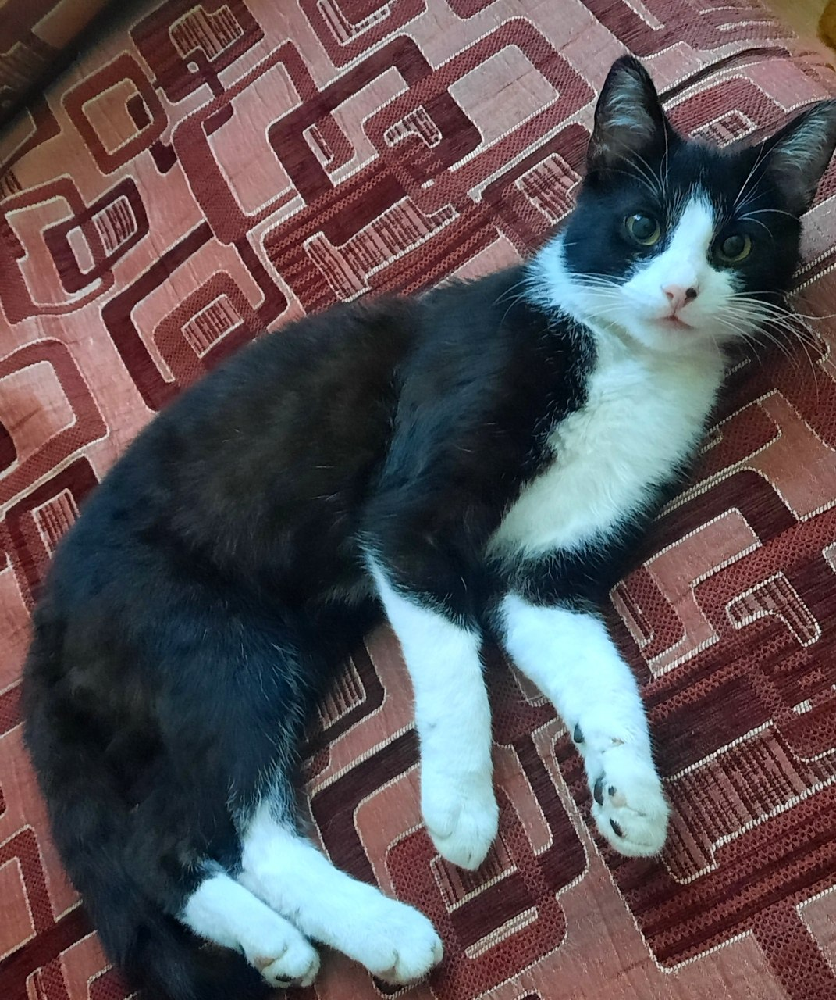

Про мене (About Me)
Вступ
Hello World! Мене звати Лукащук Анна Русланівна, я студентка 1-го курсу спеціальності ІПЗ.
Нижче Ви можете побачити кілька пунктів про мене
- Моє улюблене заняття - малювання.
- Люблю дивитись мюзикли, хочу одного разу подивитись в театрі.
- Також я колекціоную фігурки і мерч.
- Маю кота.
Зображення

На головну